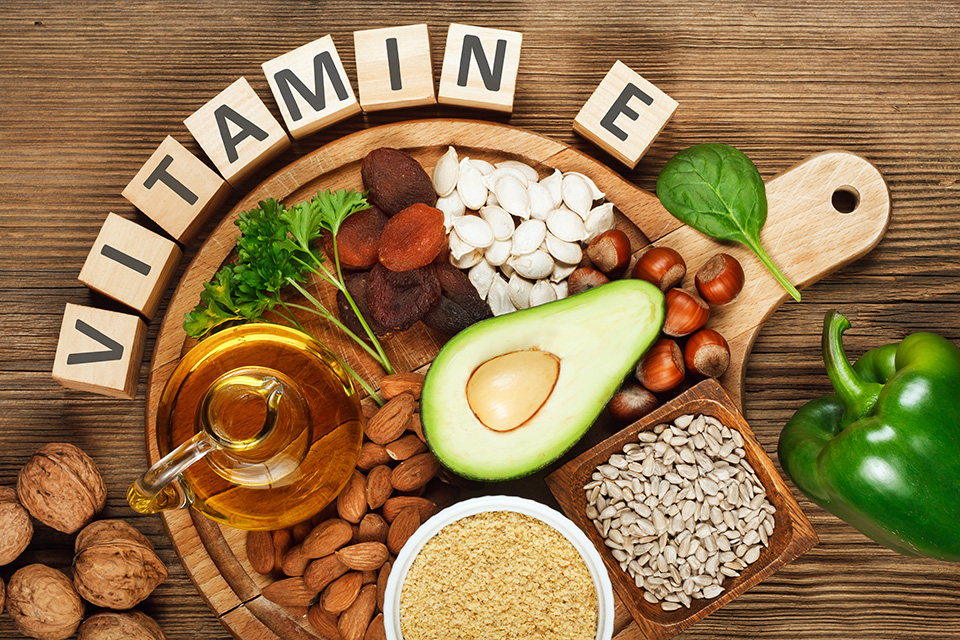

Actualmente uno de los suplementos usados por el Estado es el sulfato ferroso por sus diversos beneficios, pero presenta en ciertas ocasiones efectos colaterales o no es aceptado por el usuario; por eso, proponemos dos posibles estrategias.
Bisglicinato de hierro (FeBC): Un estudio en Brazil se llevó a cabo con el objetivo de comparar bisglicinato de hierro y el hierro de polimaltosa (lo utilizamos en el tratamiento y prevención de la anemia). Para eso se trabajó con un grupo de niños entre 1 a 13 años, luego se los dividió en dos grupos; al primero se le suministro bisglicinato de hierro, y al segundo con hierro de polimaltosa, el tratamiento duro 45 días.(1) Los resultados fueron positivos en ambos grupos, pero mostraron una mayor eficacia en el grupo que fue tratado con bisglicinato de hierro. En este grupo los niveles de ferritina mostraron un aumento, lo que muestra que la demanda de hierro se regula según las necesidades del cuerpo. (1) Otro estudio en Italia fue llevado a cabo con el objetivo de comparar el sulfato de hierro y el bisglicinato de hierro. Para ese estudio se trabajó con 300 niños menores de 32 semanas. Se los dividió en dos grupos, uno de 225 niños y otro de 75 niños. Al primero se le suplemento con sulfato de hierro y al segundo con bisglicinato de hierro.(3) Como resultado se mostró una mayor eficacia del bisglicinato de hierro comparado con el del sulfato de hierro. Este hecho es importante ya que se puede considerarse como un suplemento alternativo al sulfato de hierro; además, se le suma su alta biodisponibilidad y menor dosis proporcionada . +51 952 839 351
+51 952 839 351
Tratamientos alternativos

Ehhhhhh
Vitamina E + suplementos de hierro:
La suplementación con hierro ha mostrado ser una terapia efectiva; sin embargo, también ha mostrado efectos colaterales como estreñimiento o inflamaciones intestinales y sistemáticas, lo que puede reducir la absorción de hierro. (3) Es por ello que tomamos en cuenta un estudio sobre los efectos de la vitamina E con la suplementación de hierro para mejorar el actual tratamiento que brinda el Estado. Ese estudio fue medido a partir de dos grupos de control, una que se le administraba una terapia con hierro y con vitamina E, y otro que solo se le administraba la terapia con hierro. Para ese estudio se evaluaron la ferritina sérica, la Hb, la transferrina y otros biomarcadores sobre el estado de inflamación. Los resultados se midieron después de 8 semanas. Estos mostraron una mejora en el promedio de ferritina sobre los dos grupos, y una mejora en la concentración sérica de vitamina E en el grupo que se le administro hierro más vitamina E. Todo esto dejo como hipótesis que la vitamina E puede mejorar la función del intestino grueso y disminuir los efectos colaterales. (3) Es por ello, que vemos importante investigar nuevas formas de disminuir los efectos y mejorar la adherencia de los tratamientos que brinda el Estado. Ya que a cambiar los planes actuales del Estado es lo más factible.

(1)Name JJ, Vasconcelos AR, Maluf CVR. (2018). Iron Bisglycinate Chelate and Polymaltose Iron for the Treatment of Iron Deficiency Anemia: a Pilot Randomized Trial.. 10/25/2018, de Pubmed Sitio web: https://www.ncbi.nlm.nih.gov/pubmed/30280670 (2)Bagna R, Spada E, Mazzone R, Saracco P, Boetti T, Cester EA, Bertino E, Coscia A. (2018). Efficacy of Supplementation with Iron Sulfate Compared to Iron Bisglycinate Chelate in Preterm Infants.. 10/25/2018, de Pubmed Sitio web: https://www.ncbi.nlm.nih.gov/pubmed/29366419 (3)Tang M, Frank DN, Sherlock L, Ir D, Robertson CE, Krebs NF.. (2016). Effect of Vitamin E With Therapeutic Iron Supplementation on Iron Repletion and Gut Microbiome in US Iron Deficient Infants and Toddlers.. 10/25/2018, de Pubmed Sitio web: https://www.ncbi.nlm.nih.gov/pubmed/27548249